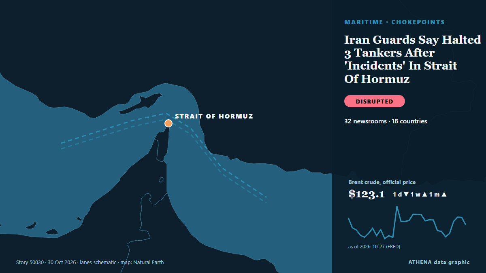

Iran Guards Say Halted 3 Tankers After 'Incidents' In Strait Of Hormuz

Tehran, IRNA – Iran’s Islamic Revolution Guards Corps (IRGC) has announced the interception and destruction of an American MQ-1 drone over the eastern Strait of Hormuz. από IRNA (English)
Αναφέρθηκε ανεξάρτητα από 32 μέσα σε 18 χώρες από τις 29 Οκτ, πρώτο από το IRNA (English)· η κάλυψη εξασθενεί. Το ATHENA εκτιμά τον κίνδυνο χαμηλό (1.8/10), κυρίως λόγω της σοβαρότητας της βλάβης που περιγράφεται και της γεωγραφικής και τομεακής εμβέλειάς του. Η βεβαιότητα είναι 89% (υψηλή), καθώς το επιβεβαιώνουν 32 ανεξάρτητα μέσα με μέση αξιοπιστία πηγών 78%.
Γιατί έχει σημασία: Τα Στενά του Ορμούζ συνδέουν τον Περσικό Κόλπο με τον ανοιχτό ωκεανό. Από εκεί περνά περίπου το ένα πέμπτο του πετρελαίου που καταναλώνεται παγκοσμίως, γι' αυτό επιθέσεις σε πλοία ή απειλές κλεισίματος επηρεάζουν μέσα σε λίγες ώρες τις τιμές της ενέργειας και τα ασφάλιστρα.
Τι άλλαξε: 48 νέες αναφορές από 30 μέσα στο 24ωρο έως 30 Οκτ.
Πρώτη διατύπωση: IRGC says two tankers halted in Hormuz Strait
Οι τίτλοι των ειδήσεων παρουσιάζονται στα αγγλικά, όπως δημοσιεύτηκαν.
Με μια ματιά
Επιλέγεται, βαθμολογείται και γράφεται από τη δημοσιευμένη μεθοδολογία του ATHENA. Κανένας συντάκτης δεν παρεμβαίνει σε μεμονωμένα γεγονότα. Πώς παράγεται ›
| 29 Oct 06:27 UTC | 4 |
|---|---|
| 29 Oct 08:27 UTC | 8 |
| 29 Oct 10:27 UTC | 5 |
| 29 Oct 12:27 UTC | 3 |
| 29 Oct 14:27 UTC | 0 |
| 29 Oct 16:27 UTC | 0 |
| 29 Oct 18:27 UTC | 0 |
| 29 Oct 20:27 UTC | 1 |
| 29 Oct 22:27 UTC | 1 |
| 30 Oct 00:27 UTC | 3 |
| 30 Oct 02:27 UTC | 3 |
| 30 Oct 04:27 UTC | 1 |
| 30 Oct 06:27 UTC | 1 |
| 30 Oct 08:27 UTC | 1 |
| 30 Oct 10:27 UTC | 9 |
| 30 Oct 12:27 UTC | 13 |
| 30 Oct 14:27 UTC | 7 |
| 30 Oct 16:27 UTC | 2 |
| 30 Oct 18:27 UTC | 6 |
| 29 Oct 06:38 UTC | 0.0 |
|---|---|
| 29 Oct 08:20 UTC | 1.1 |
| 29 Oct 10:14 UTC | 1.9 |
| 30 Oct 12:52 UTC | 2.8 |
| 30 Oct 14:52 UTC | 2.2 |
| 30 Oct 19:49 UTC | 1.8 |
Γιατί αυτοί οι αριθμοί
Σημασία
Κίνδυνος
Βεβαιότητα
Η κάλυψη — ποιος το ανέφερε και πότε
ο τίτλος όπως δημοσιεύτηκε · ανοίγει το πρωτότυπο- IRNA (English) · Ιράν · IranIRGC downs MQ-1 drone over Strait of Hormuz
- Anadolu Agency (English) · Τουρκία · TurkeyIran’s army says it downed MQ-1 drone east of Strait of Hormuz
- Arab News · Σαουδική Αραβία · Saudi ArabiaIran’s Revolutionary Guards say three oil tankers hit mines in Strait of Hormuz
- Kurdistan24 (English) · Ιράκ · IraqIran’s IRGC Says It Downed US-Made Drone Near Strait of Hormuz
- Seatrade Maritime · Ηνωμένο Βασίλειο · United KingdomTanker on fire and largely submerged in Hormuz
- APA (English) · Αζερμπαϊτζάν · AzerbaijanIRGC: Three tankers hit mines in Strait of Hormuz over past 24 hours
- Xinhua (English) — page reader · Κίνα · ChinaUrgent: Iran's IRGC says 3 oil tankers hit mines in Strait of Hormuz
- IRNA (English) · Ιράν · IranThree oil tankers explode while taking unauthorized route through Strait of Hormuz: IRGC Navy
- Middle East Eye · INTIran's Revolutionary Guards say three oil tankers hit mines in Strait of Hormuz
- Shafaq News (English) · Ιράκ · IraqThree tankers hit mines in Hormuz
- Mehr News (English) · Ιράν · IranIRGC captures US MQM-170 spy drone
- IRNA (English) · Ιράν · IranIRGC Navy captures US drone intact over Strait of Hormuz
- IRNA (English) · Ιράν · IranStrait of Hormuz reality determined on ground: IRGC spokesperson
- Türkiye Today · Τουρκία · TurkeyIRGC claims 3 tankers exploded after hitting mines on 'unauthorized' Hormuz route
- Mehr News (English) · Ιράν · IranThree violating oil tankers explode in Strait of Hormuz
- ProtoThema English ·Three oil tankers engulfed in flames after striking mines in Strait of Hormuz, Iran claims
- Kurdistan24 (English) · Ιράκ · IraqIran Says Three Oil Tankers Caught Fire After Hitting Mines in Strait of Hormuz
- NEWS.am (English) · Αρμενία · ArmeniaIran says it shot down 2 US drones near Hormuz strait
- Free Malaysia Today · Μαλαισία · MalaysiaIran’s Guards navy captures US drone intact over Strait of Hormuz
- TASS (English) · Ρωσία · RussiaThree tankers hit mines in Strait of Hormuz within 24 hours, IRGC Navy says
- Anadolu Agency (English) · Τουρκία · TurkeyIran’s IRGC intercepts ‘hostile’ fighter jet in Strait of Hormuz: Report
- Al Jazeera English · Κατάρ · QatarIran war live: Saudi coalition says it downed Houthi drone in Mecca region
- Free Malaysia Today · Μαλαισία · MalaysiaIran says four tankers on fire after hitting mines in Strait of Hormuz
- New Straits Times · Μαλαισία · MalaysiaIran says four tankers on fire after hitting mines in Hormuz
- Business Recorder · Πακιστάν · PakistanIran says four tankers on fire after hitting mines
- The Maritime Executive · Ηνωμένες Πολιτείες · United StatesTanker Hit by Limpet Mine Attack in Strait of Hormuz
- Seatrade Maritime · Ηνωμένο Βασίλειο · United KingdomTanker catches fire in Hormuz after explosives attached to hull
- Mehr News (English) · Ιράν · IranUS root cause of maritime insecurity in Strait of Hormuz
- CNA (Channel NewsAsia) · Σιγκαπούρη · SingaporeIran says four tankers on fire after hitting mines in Strait of Hormuz
- ProtoThema English ·Attacks on ships in the Strait of Hormuz take a new turn: Explosive devices planted on a tanker’s hull
- Asharq Al-Awsat (English) · Σαουδική Αραβία · Saudi ArabiaUKMTO: Tanker in Strait of Hormuz Hit by Explosives Attached to Small Boat
- Arab News · Σαουδική Αραβία · Saudi ArabiaIran Guards say three tankers halted in Hormuz
- Middle East Eye · INTIRGC Navy intercepts two vessels in southern waters of Hormuz
- The Jerusalem Post · Ισραήλ · IsraelIRGC says two tankers stopped south of Strait of Hormuz after ignoring radio warnings from Iran
- Business Recorder · Πακιστάν · PakistanIran's IRGC Navy says three tankers catch fire in Strait of Hormuz
- Anadolu Agency (English) · Τουρκία · TurkeyIran says navy destroyed ‘enemy’ unmanned vessel, 2 tankers damaged in Strait of Hormuz
- Kurdistan24 (English) · Ιράκ · IraqIran Says Two Oil Tankers Halted in Strait of Hormuz
- IRNA (English) · Ιράν · IranIRGC Navy: Two violating oil tankers stopped in south of Strait of Hormuz
- gCaptain · Ηνωμένες Πολιτείες · United StatesTanker in Strait of Hormuz Hit by Limpet Mines, Security Sources Say
- Al-Monitor · Ηνωμένες Πολιτείες · United StatesIran's IRGC navy says two tankers stopped south of Hormuz after incidents